Справочник по системному программированию · модуль 2 · процессы
2.2
Запуск процесса
В главе ядро агента получает функции core_spawn и core_wait: первая запускает программу, вторая ждёт её завершения и возвращает код. Разобрано, как запуск устроен в Windows и в macOS и Linux, чем ядро держит запущенный процесс, что делать, когда время вышло или программы нет, и что остаётся в системе, если код не забрать. В конце мозг агента запускает программу и находит её своим ребёнком в списке процессов.
- Категория
- Процессы
- Уровень
- Начальный
- Что получится
agent/core/core_spawn.c,run_child.c, новыйbrain.py- Сколько занимает
- Пара 5, около сорока пяти минут за компьютером
§1Задача главы
В ЛР 5 было видно, как родитель запускает программу: просит ядро системы создать процесс, ждёт его завершения и забирает код. В этой главе то же делает ядро агента. Оно получает две функции: core_spawn запускает программу по списку аргументов, core_wait ждёт её завершения и возвращает код. Мозг агента запускает через них программу на Python, находит её в списке процессов из главы 2.1 и получает её код.
Начальник смены отдаёт заказ в цех: что сделать и из чего. Цех выдаёт номер заказа, а когда заказ готов, сообщает итог: «сделано» или «брак, причина такая-то». Начальник спрашивает о заказе по номеру столько раз, сколько нужно, пока не заберёт итог.
Цех не хранит готовые заказы вечно. Процесс тоже: его запись остаётся в системе, пока родитель не заберёт код, и родитель обязан это сделать.
Схема показывает путь запуска целиком: мозг передаёт список аргументов ядру агента, ядро агента — системе, а код завершения возвращается тем же путём.
Путь запуска: от мозга до кода завершения
мозг
spawn([…])список: программа и аргументыядро агента
core_spawnCreateProcessWposix_spawnpсистема
новый процессномер, память, программаребёнок
завершаетсяоставляет код, например 3ребёнок
код 3хранится в системеядро агента
core_waitWaitForSingleObject, GetExitCodeProcesswaitpidмозг
wait(child)возвращает 3Верхняя строка — запуск, нижняя — путь кода завершения обратно к мозгу. Бирюзовые карточки — Python, янтарные — ядро на C, серые — система.
По верхней строке видно, что сам мозг процессы не создаёт: он передаёт список строк функции на C, а та вызывает CreateProcessWposix_spawnp. Нижняя строка — обратный путь: код 3, который оставил ребёнок, хранится в системе, пока core_wait его не заберёт и не отдаст мозгу. Код завершения — число, которое процесс оставляет при завершении: 0 — успех, остальные числа — ошибки, смысл которых задаёт программа.
Зачем это нужно в работе
- Запускать проверки. Агенты наблюдения запускают системные программы и разбирают их вывод и код. Код завершения — самый короткий ответ «получилось или нет».
- Не терять завершившиеся процессы. Программа, которая запускает детей и не забирает их коды, копит в системе записи о них. За сутки работы службы их набираются тысячи.
- Ограничивать время. Зависшая программа не должна останавливать агента, поэтому ожидание идёт с пределом времени.
Глава продолжает репозиторий sysprog-start после главы 2.1: в agent/core лежат core.h, core_info.c и core_procs.c, в agent/brain — brain.py со списком процессов. Команды выполняются во встроенном терминале VS Code, запущенного из окна x64 Native Tools Command Prompt for VS 2022, как в главах 1.2 и 2.1.Команды выполняются во встроенном терминале VS Code в папке agent/core.
Ядро отвечает о запущенном процессе структурой, поэтому первая часть начинается с её описания в core.h.
§2Шаг 1. Описать запущенный процесс в core.h
О запущенном процессе ядро агента запоминает две вещи: номер процесса и дескриптор — номер, по которому Windows даёт работать с объектом системы, например с процессом. В macOS и Linux к процессу обращаются по его номеру, и поле дескриптора там остаётся нулём. Оба поля — int64_t: в номер процесса и в дескриптор Windows помещается 8 байт.
struct core_proc { … }; CORE_API int core_get_info(struct core_info *out); CORE_API int core_list_procs(struct core_proc *out, int32_t max, int32_t *count);
struct core_proc { … }; struct core_child { int64_t pid; int64_t handle; }; CORE_API int core_get_info(struct core_info *out); CORE_API int core_list_procs(struct core_proc *out, int32_t max, int32_t *count); CORE_API int core_spawn(char *const argv[], struct core_child *out); CORE_API int core_wait(struct core_child *child, int32_t timeout_ms, int32_t *exit_code);
Структура занимает 16 байт, поля идут подряд:
Параметры функций:
argv— список строк: имя программы и её аргументы, в концеNULL. Так же устроенargvвmainлюбой программы на C;out— кудаcore_spawnзапишет номер и дескриптор нового процесса;timeout_ms— сколько миллисекунд ждать; −1 — ждать сколько потребуется;exit_code— кудаcore_waitзапишет код завершения.
Обе функции, как core_list_procs, возвращают 0 при успехе и код ошибки системы при неудаче. Все случаи — в таблице:
Договор функций: что приходит в ответ
| Случай | Функция | Код | Что в ответе |
|---|---|---|---|
| программа запущена | core_spawn | 0 | child.pid, child.handlehandle = 0 |
| программы нет | core_spawn | 2 | ничего |
| ребёнок завершился | core_wait | 0 | код завершения в exit_code |
| время вышло | core_wait | 25860110 | ребёнок работает, ждать можно снова |
| ошибка в параметрах | обе | 8722 | ничего |
Ноль в колонке «Код» — успех. Код 2 одинаков на трёх системах: ERROR_FILE_NOT_FOUNDENOENT, «нет такого файла».
Строки таблицы идут в порядке жизни процесса: запуск, ожидание, завершение. Особая строка — «время вышло»: это ошибка ожидания, а сам процесс жив, и его можно ждать снова. Код этой ошибки на трёх системах разный, а «программы нет» везде — 2, как в ЛР 5.
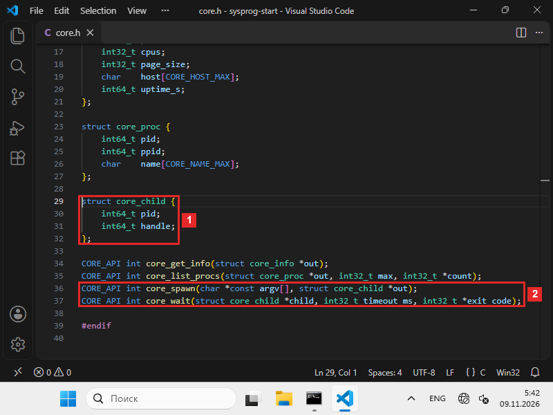
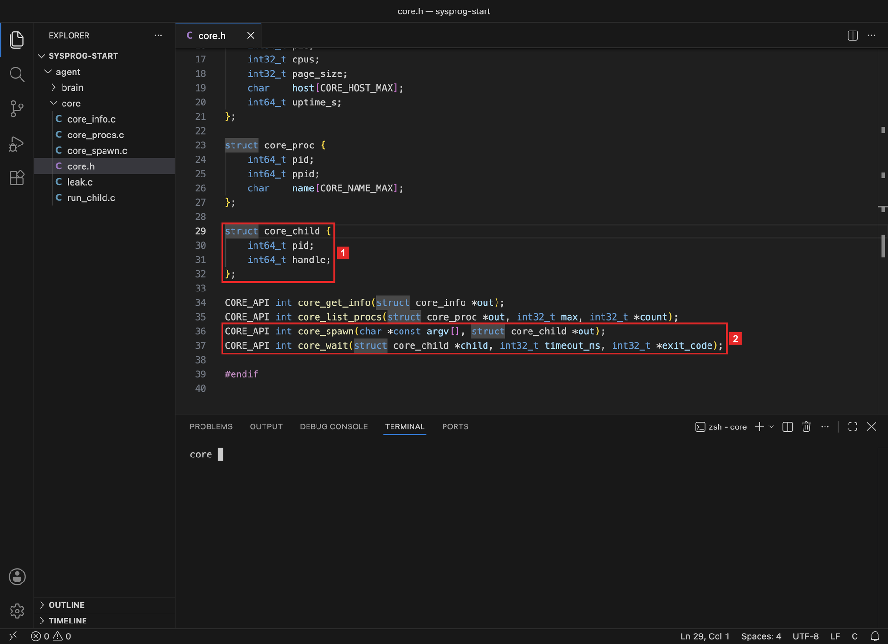
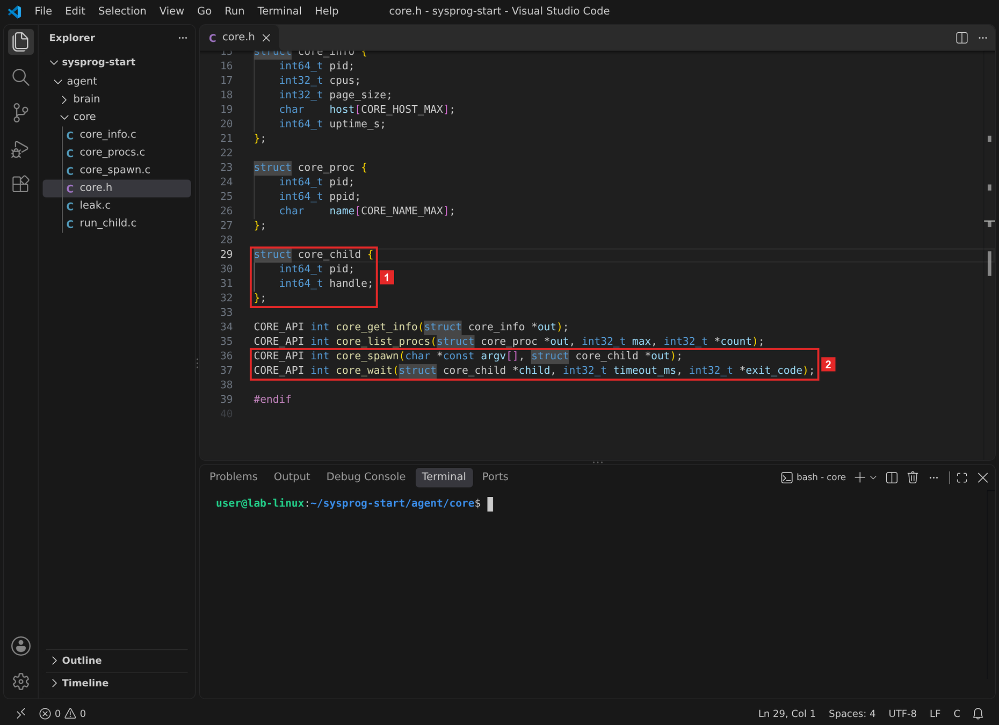
Что получилось.В core.h описаны структура на 16 байт и договор двух функций. Теперь их нужно написать для своей системы.
§3Шаг 2. Написать core_spawn.c
Обе функции — в новом файле agent/core/core_spawn.c. Для macOS и Linux файл один: posix_spawnp и waitpid есть в обеих системах. Windows отвечает на запуск иначе, и от этого зависит, как ядро держит процесс:
Чем держат запущенный процесс
Windows
macOS и Linux
В обоих случаях запись о завершившемся процессе живёт, пока родитель её не освободит: в Windows — закрытием дескриптора процесса, в macOS и Linux — вызовом waitpid.
Верхняя ветка — Windows: CreateProcessW возвращает номер процесса и два дескриптора, потока и процесса. Дескриптор потока ядру агента не нужен и закрывается сразу, дескриптор процесса хранится до core_wait. Нижняя ветка — macOS и Linux: в ответ приходит только номер, и по нему waitpid забирает код. Последняя карточка каждой ветки — шаг, без которого система не освобождает запись о процессе. В части 3 видно, что бывает, если этот шаг пропустить.
#include <string.h> #include <windows.h> #include "core.h" #define CMD_MAX 1024 int core_spawn(char *const argv[], struct core_child *out) { WCHAR cmd[CMD_MAX]; int used = 0; STARTUPINFOW si; PROCESS_INFORMATION pi; if (argv == NULL || argv[0] == NULL || out == NULL) return ERROR_INVALID_PARAMETER; for (int i = 0; argv[i] != NULL; i++) { int quote = strchr(argv[i], ' ') != NULL; if (used + 3 >= CMD_MAX) return ERROR_INSUFFICIENT_BUFFER; if (i > 0) cmd[used++] = L' '; if (quote) cmd[used++] = L'"'; int n = MultiByteToWideChar(CP_UTF8, 0, argv[i], -1, cmd + used, CMD_MAX - used - 2); if (n == 0) return ERROR_INSUFFICIENT_BUFFER; used += n - 1; if (quote) cmd[used++] = L'"'; } cmd[used] = L'\0'; ZeroMemory(&si, sizeof si); si.cb = sizeof si; if (!CreateProcessW(NULL, cmd, NULL, NULL, FALSE, 0, NULL, NULL, &si, &pi)) return (int)GetLastError(); CloseHandle(pi.hThread); out->pid = pi.dwProcessId; out->handle = (int64_t)(intptr_t)pi.hProcess; return 0; } int core_wait(struct core_child *child, int32_t timeout_ms, int32_t *exit_code) { DWORD code; if (child == NULL || child->handle == 0 || exit_code == NULL) return ERROR_INVALID_PARAMETER; HANDLE h = (HANDLE)(intptr_t)child->handle; DWORD r = WaitForSingleObject(h, timeout_ms < 0 ? INFINITE : (DWORD)timeout_ms); if (r == WAIT_TIMEOUT) return WAIT_TIMEOUT; if (r != WAIT_OBJECT_0) return (int)GetLastError(); if (!GetExitCodeProcess(h, &code)) return (int)GetLastError(); CloseHandle(h); child->handle = 0; *exit_code = (int32_t)code; return 0; }
#include <errno.h> #include <spawn.h> #include <sys/wait.h> #include <time.h> #include "core.h" extern char **environ; int core_spawn(char *const argv[], struct core_child *out) { pid_t pid; if (argv == NULL || argv[0] == NULL || out == NULL) return EINVAL; int err = posix_spawnp(&pid, argv[0], NULL, NULL, argv, environ); if (err != 0) return err; out->pid = pid; out->handle = 0; return 0; } int core_wait(struct core_child *child, int32_t timeout_ms, int32_t *exit_code) { struct timespec step = {0, 10 * 1000 * 1000}; int status; int32_t waited = 0; if (child == NULL || child->pid <= 0 || exit_code == NULL) return EINVAL; for (;;) { pid_t r = waitpid((pid_t)child->pid, &status, WNOHANG); if (r == -1) return errno; if (r != 0) break; if (timeout_ms >= 0 && waited >= timeout_ms) return ETIMEDOUT; nanosleep(&step, NULL); waited += 10; } if (WIFEXITED(status)) *exit_code = WEXITSTATUS(status); else *exit_code = 128 + WTERMSIG(status); return 0; }
Разбор core_spawn.c по шагамWindows
Зачем эта программа. Запустить программу по списку аргументов и дождаться её кода завершения. core_spawn собирает из списка командную строку и вызывает CreateProcessW, core_wait ждёт процесс и забирает код.
#include <string.h> #include <windows.h> #include "core.h" #define CMD_MAX 1024 int core_spawn(char *const argv[], struct core_child *out) { WCHAR cmd[CMD_MAX]; int used = 0; STARTUPINFOW si; PROCESS_INFORMATION pi; if (argv == NULL || argv[0] == NULL || out == NULL) return ERROR_INVALID_PARAMETER; for (int i = 0; argv[i] != NULL; i++) { int quote = strchr(argv[i], ' ') != NULL; if (used + 3 >= CMD_MAX) return ERROR_INSUFFICIENT_BUFFER; if (i > 0) cmd[used++] = L' '; if (quote) cmd[used++] = L'"'; int n = MultiByteToWideChar(CP_UTF8, 0, argv[i], -1, cmd + used, CMD_MAX - used - 2); if (n == 0) return ERROR_INSUFFICIENT_BUFFER; used += n - 1; if (quote) cmd[used++] = L'"'; } cmd[used] = L'\0'; ZeroMemory(&si, sizeof si); si.cb = sizeof si; if (!CreateProcessW(NULL, cmd, NULL, NULL, FALSE, 0, NULL, NULL, &si, &pi)) return (int)GetLastError(); CloseHandle(pi.hThread); out->pid = pi.dwProcessId; out->handle = (int64_t)(intptr_t)pi.hProcess; return 0; } int core_wait(struct core_child *child, int32_t timeout_ms, int32_t *exit_code) { DWORD code; if (child == NULL || child->handle == 0 || exit_code == NULL) return ERROR_INVALID_PARAMETER; HANDLE h = (HANDLE)(intptr_t)child->handle; DWORD r = WaitForSingleObject(h, timeout_ms < 0 ? INFINITE : (DWORD)timeout_ms); if (r == WAIT_TIMEOUT) return WAIT_TIMEOUT; if (r != WAIT_OBJECT_0) return (int)GetLastError(); if (!GetExitCodeProcess(h, &code)) return (int)GetLastError(); CloseHandle(h); child->handle = 0; *exit_code = (int32_t)code; return 0; }
- Подключить заголовочные файлы
string.h—strchr, поиск символа в строке;windows.h— функции и типы WinAPI;core.h—struct core_childи объявления функций ядра.
CMD_MAX— сколько символов UTF-16 помещается в командную строку ядра, 1024. - Начать core_spawn
cmd— командная строка в UTF-16: в этой кодировке её принимаетCreateProcessW.used— сколько символов уже записано.STARTUPINFOW si— как показать окно нового процесса; здесь всё по умолчанию.PROCESS_INFORMATION pi— сюда Windows запишет ответ: номер процесса, номер потока и два дескриптора. - Проверить параметры
Без списка аргументов, без имени программы или без места для ответа запускать нечего — код 87,
ERROR_INVALID_PARAMETER. - Собрать командную строку
В Windows программа получает аргументы одной строкой, и разбирает её сама. Поэтому список
argvсклеивается через пробел. Аргумент с пробелом берётся в кавычки, иначе он развалится на два.strchr(argv[i], ' ')— есть ли в аргументе пробел;used + 3 >= CMD_MAX— места не осталось даже на пробел и две кавычки: код 122;MultiByteToWideChar(CP_UTF8, …)— перевод аргумента из UTF-8 в UTF-16 прямо вcmd, как в главе 1.1. Функция возвращает число символов вместе с завершающим нулём, поэтомуusedрастёт наn - 1.
Из
["cmd", "/c", "exit 7"]получаетсяcmd /c "exit 7".Анкету заполняют печатными буквами в одну строку, а слова из нескольких частей берут в кавычки, чтобы их не разделили.
- Создать процесс
ZeroMemoryобнуляетsi, аsi.cbсообщает Windows размер структуры. ПараметрыCreateProcessWпо порядку:NULL— путь к программе не задан: Windows возьмёт первое слово командной строки, допишет.exeи будет искать файл в папке программы-родителя, в текущей папке, в системных папках Windows и затем в папках изPATH;cmd— командная строка. Функция может её менять, поэтому строка лежит в массиве: строковую константу менять нельзя;NULL, NULL— права доступа к процессу и потоку по умолчанию;FALSE— ребёнок не получает открытые дескрипторы родителя;0— без особых флагов: ребёнок пишет в ту же консоль;NULL, NULL— переменные окружения и текущая папка родителя;&si, &pi— как показать окно и куда записать ответ.
Если процесс не создан, функция возвращает 0. Причину даёт
GetLastError: 2 — файла программы нет. - Сохранить ответ
Windows вернула два дескриптора. Дескриптор (handle) — номер в таблице открытых объектов процесса, через него с объектом работают функции WinAPI. Дескриптор главного потока ядру не нужен, и
CloseHandleсразу его закрывает. Дескриптор процесса нужен, чтобы дождаться процесса и забрать код, поэтому он сохраняется вout->handle.(int64_t)(intptr_t)— перевод адреса-дескриптора в число той же ширины, что поле структуры. - Начать core_wait
Без дескриптора процесса ждать нечего:
handle == 0значит, что процесс не запускался или уже дождались. Дескриптор возвращается из числа обратно вHANDLE. - Дождаться процесса
WaitForSingleObjectставит поток на паузу, пока процесс не завершится или не выйдет время. Отрицательное время в ядре значит «ждать сколько потребуется» —INFINITE. ОтветWAIT_TIMEOUT(258) — время вышло, процесс ещё работает, и дескриптор остаётся открытым: его можно ждать снова. Любой другой ответ, кромеWAIT_OBJECT_0, — ошибка. - Забрать код и закрыть дескриптор
GetExitCodeProcessчитает код завершения. После этого дескриптор процесса закрывается, и Windows может удалить запись о процессе.child->handle = 0отмечает, что ждать больше нечего.
Разбор core_spawn.c по шагамmacOS и Linux
Зачем эта программа. Запустить программу по списку аргументов и дождаться её кода завершения. core_spawn вызывает posix_spawnp, core_wait забирает код вызовом waitpid.
#include <errno.h> #include <spawn.h> #include <sys/wait.h> #include <time.h> #include "core.h" extern char **environ; int core_spawn(char *const argv[], struct core_child *out) { pid_t pid; if (argv == NULL || argv[0] == NULL || out == NULL) return EINVAL; int err = posix_spawnp(&pid, argv[0], NULL, NULL, argv, environ); if (err != 0) return err; out->pid = pid; out->handle = 0; return 0; } int core_wait(struct core_child *child, int32_t timeout_ms, int32_t *exit_code) { struct timespec step = {0, 10 * 1000 * 1000}; int status; int32_t waited = 0; if (child == NULL || child->pid <= 0 || exit_code == NULL) return EINVAL; for (;;) { pid_t r = waitpid((pid_t)child->pid, &status, WNOHANG); if (r == -1) return errno; if (r != 0) break; if (timeout_ms >= 0 && waited >= timeout_ms) return ETIMEDOUT; nanosleep(&step, NULL); waited += 10; } if (WIFEXITED(status)) *exit_code = WEXITSTATUS(status); else *exit_code = 128 + WTERMSIG(status); return 0; }
- Подключить заголовочные файлы
errno.h— коды ошибок иerrno;spawn.h—posix_spawnp;sys/wait.h—waitpidи разбор ответа:WIFEXITED,WEXITSTATUS;time.h—nanosleep, пауза между проверками.
- Объявить переменные окружения
environ— массив строк «имя=значение» с переменными окружения процесса. Он есть в каждой программе, но в заголовочных файлах не объявлен, поэтому строкуexternпишут сами. Ядро передаёт его ребёнку, и тот получает те же переменные, что у родителя. - Начать core_spawn и проверить параметры
Без списка аргументов, без имени программы или без места для ответа — код 22,
EINVAL. - Запустить программу
posix_spawnpсоздаёт процесс и загружает в него программу одним вызовом — те же копия иexecve, что в ЛР 5. Букваpв конце значит, что имя ищется по папкамPATH, как уenv.&pid— сюда запишется номер нового процесса;argv[0]— имя программы;NULL, NULL— без перенаправления файлов и без особых настроек;argv— весь список аргументов, его последний элемент —NULL;environ— переменные окружения.
Функция возвращает код ошибки сама, без
errno: 2 — программы нет. - Сохранить ответ
В macOS и Linux процесс называют по номеру, отдельного дескриптора нет, поэтому
handleравен 0. - Начать core_wait
step— пауза 10 мс между проверками: 0 секунд и 10 000 000 наносекунд.waited— сколько миллисекунд уже прошло. Без номера процесса ждать нечего —EINVAL. - Проверять, завершился ли ребёнок
waitpid(pid, &status, WNOHANG)спрашивает ядро о ребёнке. С флагомWNOHANGвызов отвечает сразу:- номер ребёнка — он завершился, код записан в
status, и ядро удалило запись о нём; - 0 — ребёнок ещё работает;
- −1 — ошибка, например
ECHILD: такого ребёнка нет.
Пока ребёнок работает, цикл спит 10 мс и спрашивает снова. Когда прошло
timeout_ms, функция возвращаетETIMEDOUT— 60 в macOS, 110 в Linux.Курьер звонит в дверь каждые 10 секунд и после минуты уходит с запиской «зайду позже».
- номер ребёнка — он завершился, код записан в
- Разобрать ответ
status— число, в котором ядро упаковало, как завершился процесс.WIFEXITED— завершился сам, тогдаWEXITSTATUSдаёт код. Иначе процесс завершён сигналом, и ядро записывает128 + номер сигнала, как это делают оболочки: сигнал 9 даёт 137.
В обоих файлах одинаковы проверка параметров и ответ: 0 или код ошибки системы. Различается, как система запускает процесс и как сообщает о его завершении: Windows будит ожидающий поток, когда процесс завершилсяядро агента само спрашивает систему каждые 10 мс.
Что получилось.Функции запуска и ожидания написаны для своей системы. Проверим их программой на C, прежде чем вызывать из Python.
§4Шаг 3. Проверить ядро программой на C
Программа agent/core/run_child.c одна для трёх систем: она берёт из командной строки время ожидания и запускаемую программу, вызывает обе функции ядра и печатает результат.
#include <inttypes.h> #include <stdio.h> #include <stdlib.h> #include "core.h" int main(int argc, char *argv[]) { struct core_child child; int32_t code = 0; if (argc < 3) { printf("usage: run_child timeout_ms program [args...]\n"); return 1; } int err = core_spawn(argv + 2, &child); if (err != 0) { printf("core_spawn: error %d\n", err); return 1; } printf("started pid %" PRId64 "\n", child.pid); err = core_wait(&child, atoi(argv[1]), &code); if (err != 0) { printf("core_wait: error %d, pid %" PRId64 " still running\n", err, child.pid); return 1; } printf("pid %" PRId64 " exited, code %d\n", child.pid, (int)code); return 0; }
Разбор run_child.c по шагамвсе системы
Зачем эта программа. Проверить ядро без Python: запустить программу из командной строки, напечатать номер нового процесса и его код завершения или ошибку.
#include <inttypes.h> #include <stdio.h> #include <stdlib.h> #include "core.h" int main(int argc, char *argv[]) { struct core_child child; int32_t code = 0; if (argc < 3) { printf("usage: run_child timeout_ms program [args...]\n"); return 1; } int err = core_spawn(argv + 2, &child); if (err != 0) { printf("core_spawn: error %d\n", err); return 1; } printf("started pid %" PRId64 "\n", child.pid); err = core_wait(&child, atoi(argv[1]), &code); if (err != 0) { printf("core_wait: error %d, pid %" PRId64 " still running\n", err, child.pid); return 1; } printf("pid %" PRId64 " exited, code %d\n", child.pid, (int)code); return 0; }
- Подключить заголовочные файлы
inttypes.h— форматPRId64дляint64_t,stdlib.h—atoi. - Проверить командную строку
Программе нужны хотя бы два параметра: время ожидания в миллисекундах и имя программы. Например,
run_child 5000 sh -c "exit 7":argv[1]— 5000, сargv[2]начинается запускаемая программа. - Запустить
argv + 2— адрес третьего элемента: ядро получает список с имени программы, безrun_childи времени. Список уже кончаетсяNULL, так устроенargvлюбой программы на C. - Дождаться
atoi(argv[1])— время из командной строки числом. Если время вышло, программа сообщает код и номер процесса, который ещё работает. - Напечатать код
Номер процесса и его код завершения. Сама
run_childзавершается с кодом 0.
Собираем программу из двух файлов и запускаем вторую оболочку, которая сразу завершается с кодом 7:
cl /nologo /W4 run_child.c core_spawn.c run_child.exe 5000 cmd /c exit 7
clang -Wall -Wextra -o run_child run_child.c core_spawn.c ./run_child 5000 sh -c "exit 7"
gcc -Wall -Wextra -o run_child run_child.c core_spawn.c ./run_child 5000 sh -c "exit 7"
Строки компоновщика «Создается библиотека run_child.lib и объект run_child.exp» появляются, потому что функции ядра помечены CORE_API, то есть __declspec(dllexport). Для программы .exe эти файлы не нужны, их можно удалить.
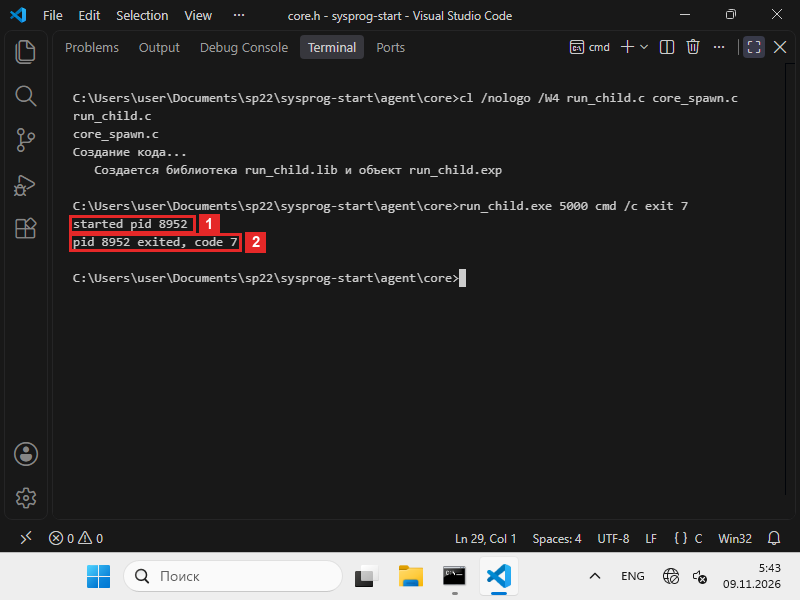
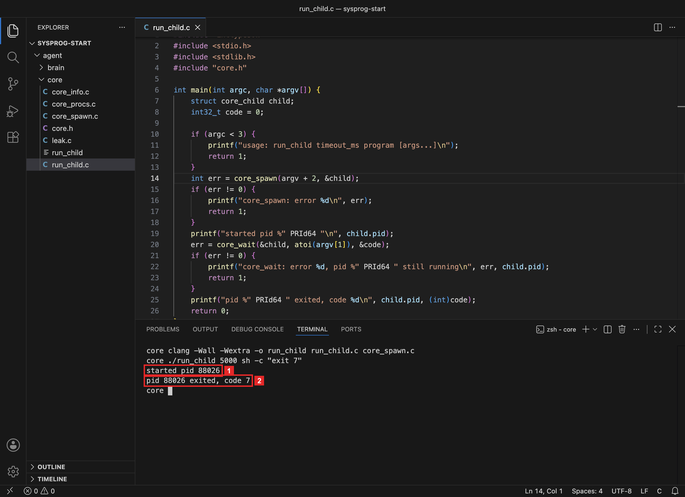
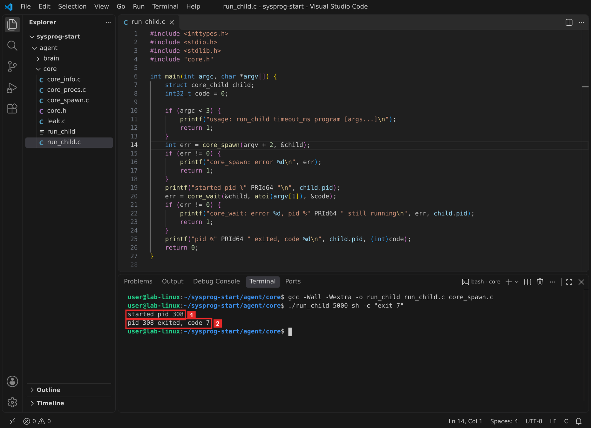
Строка 1 напечатана сразу после core_spawn: процесс уже создан и получил номер. Строка 2 — после core_wait: ребёнок завершился, и его код 7 дошёл до программы на C. Это та же цепочка, что в шаге 3 ЛР 5, только родитель теперь — ядро агента.
Что получилось.Ядро запускает программу и получает её код. Осталось проверить два отказа: ребёнок работает дольше отведённого времени, и программы нет.
§5Шаг 4. Время вышло и программы нет
Первая команда запускает ребёнка, который работает около 2 секунд, и даёт ему 300 мс. Вторая запускает программу nosuch, которой нет. После каждой печатается код завершения run_child:
run_child.exe 300 cmd /c "ping -n 3 127.0.0.1 >nul" echo %errorlevel% run_child.exe 1000 nosuch echo %errorlevel%
./run_child 300 sleep 2 echo $? ./run_child 1000 nosuch echo $?
./run_child 300 sleep 2 echo $? ./run_child 1000 nosuch echo $?
ping -n 3 трижды проверяет связь с этим же компьютером с паузой в секунду, >nul убирает его вывод. Аргумент с пробелами взят в кавычки, и core_spawn передаёт его тоже в кавычках.
sleep 2 ждёт 2 секунды и ничего не делает.
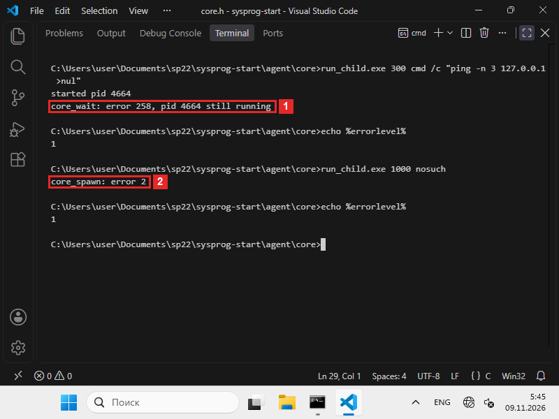
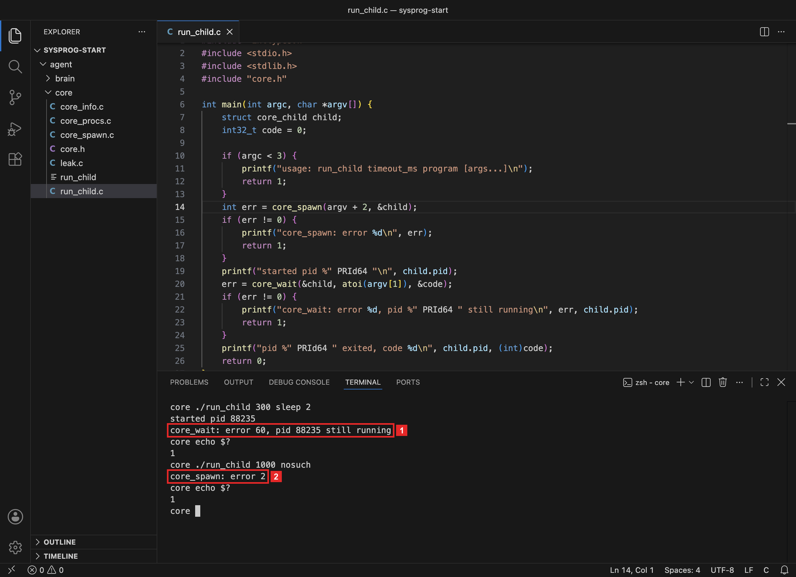
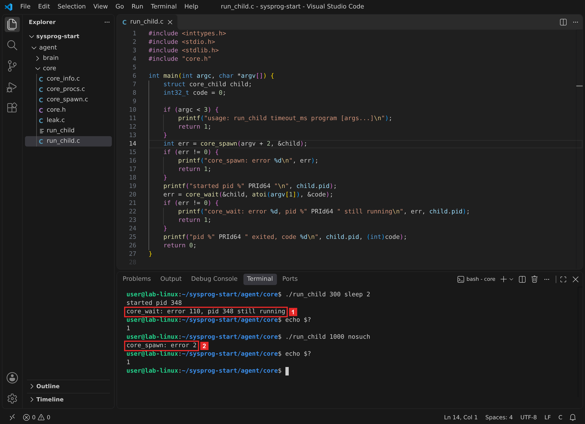
258 — WAIT_TIMEOUT: WaitForSingleObject не дождался процесса. 2 — ERROR_FILE_NOT_FOUND: CreateProcessW не нашла nosuch.exe ни в одной папке поиска.
60 — ETIMEDOUT в macOS, «Operation timed out». 2 — ENOENT: posix_spawnp не нашла nosuch ни в одной папке PATH.
110 — ETIMEDOUT в Linux, «Connection timed out»: у одной и той же ошибки в двух системах разные номера. 2 — ENOENT: posix_spawnp не нашла nosuch ни в одной папке PATH.
После отказа ожидания процесс продолжает работать: run_child завершилась, а ребёнок ещё секунду-две работает сам и становится сиротой, как в ЛР 4. Во втором случае процесса не было вовсе, поэтому печатать нечего, кроме кода. Обе программы завершились с кодом 1: так run_child сообщает о любой ошибке.
Что получилось.Ядро различает три исхода: код ребёнка, «время вышло» и «программы нет». Можно подключать функции к мозгу.
§6Шаг 5. Запустить процесс из Python
Библиотека ядра теперь собирается из трёх файлов. Программа run_child.c в неё не входит: в ней main.
cl /nologo /W4 /LD core_info.c core_procs.c core_spawn.c /Fe:sentry_core.dll
clang -Wall -Wextra -shared -fPIC -o libsentry_core.dylib core_info.c core_procs.c core_spawn.c
gcc -Wall -Wextra -shared -fPIC -o libsentry_core.so core_info.c core_procs.c core_spawn.c
В brain.py добавляются класс CoreChild после CoreProc, типы новых функций после типов core_list_procs и функции spawn и wait после parents:
class CoreChild(ctypes.Structure): _fields_ = [ ("pid", ctypes.c_int64), ("handle", ctypes.c_int64), ] core.core_spawn.argtypes = [ctypes.POINTER(ctypes.c_char_p), ctypes.POINTER(CoreChild)] core.core_spawn.restype = ctypes.c_int core.core_wait.argtypes = [ctypes.POINTER(CoreChild), ctypes.c_int32, ctypes.POINTER(ctypes.c_int32)] core.core_wait.restype = ctypes.c_int def spawn(args): argv = (ctypes.c_char_p * (len(args) + 1))(*[a.encode("utf-8") for a in args], None) child = CoreChild() err = core.core_spawn(argv, ctypes.byref(child)) if err != 0: raise OSError(err, error_text(err)) return child def wait(child, timeout_ms=-1): code = ctypes.c_int32() err = core.core_wait(ctypes.byref(child), timeout_ms, ctypes.byref(code)) if err != 0: raise OSError(err, error_text(err)) return code.value
Разбор brain.py · новые части по шагамвсе системы
Зачем эта программа. Дать мозгу две функции: spawn запускает программу через ядро, wait ждёт её и возвращает код завершения или поднимает исключение.
class CoreChild(ctypes.Structure): _fields_ = [ ("pid", ctypes.c_int64), ("handle", ctypes.c_int64), ] core.core_spawn.argtypes = [ctypes.POINTER(ctypes.c_char_p), ctypes.POINTER(CoreChild)] core.core_spawn.restype = ctypes.c_int core.core_wait.argtypes = [ctypes.POINTER(CoreChild), ctypes.c_int32, ctypes.POINTER(ctypes.c_int32)] core.core_wait.restype = ctypes.c_int def spawn(args): argv = (ctypes.c_char_p * (len(args) + 1))(*[a.encode("utf-8") for a in args], None) child = CoreChild() err = core.core_spawn(argv, ctypes.byref(child)) if err != 0: raise OSError(err, error_text(err)) return child def wait(child, timeout_ms=-1): code = ctypes.c_int32() err = core.core_wait(ctypes.byref(child), timeout_ms, ctypes.byref(code)) if err != 0: raise OSError(err, error_text(err)) return code.value
- Описать struct core_child
Те же два поля по 8 байт, что в
core.h: номер процесса и дескриптор. - Описать функции ядра
ctypes.POINTER(ctypes.c_char_p)— адрес массива строк, этоchar *const argv[]на стороне C. Остальные типы — как в главе 2.1. - spawn: список Python → argv
ctypes.c_char_p * (len(args) + 1)— тип «массив строк на одно место больше списка». Последнее место —None, в C этоNULL, конец списка. Строки Python переводятся в байты UTF-8 черезencode. Из["python", "-c", "…"]получается массив из четырёх элементов, последний — пустой адрес.Если ядро вернуло не 0, функция поднимает
OSErrorс кодом и текстом, какget_info. - wait: ждать и вернуть код
timeout_ms=-1по умолчанию — ждать сколько потребуется. Код завершения ребёнка ядро записывает вcode, функция возвращает его обычным числом Python.
Блок запуска в конце файла меняется: мозг запускает ребёнка — второй Python, который ждёт секунду и завершается с кодом 3. Пока ребёнок работает, мозг берёт список процессов и строит цепочку родителей уже от ребёнка, а затем ждёт его код не дольше 5 секунд:
if __name__ == "__main__": child = spawn([sys.executable, "-c", "import time; time.sleep(1); raise SystemExit(3)"]) procs = list_procs() chain = parents(procs, child.pid) code = wait(child, 5000) message = {"event": "agent_started", "os": sys.platform, **get_info(), "procs": len(procs), "child": child.pid, "child_code": code, "parents": [p["name"] for p in chain]} print(json.dumps(message, ensure_ascii=False, indent=2)) if len(sys.argv) > 1: status, body = send(message, sys.argv[1]) print("n8n:", status, body)
sys.executable — полный путь к интерпретатору Python, который выполняет brain.py: ребёнок запускается тем же Python. raise SystemExit(3) завершает программу с кодом 3.
cd ..\brain python brain.py
cd ../brain python3 brain.py
cd ../brain python3 brain.py
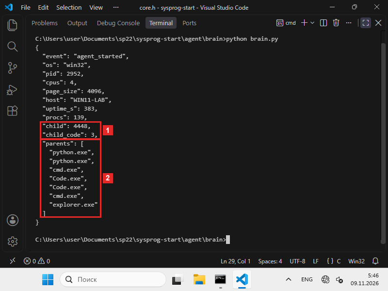
python.exe ребёнка, python.exe мозга, cmd.exe терминала, два Code.exe, cmd.exe и explorer.exe.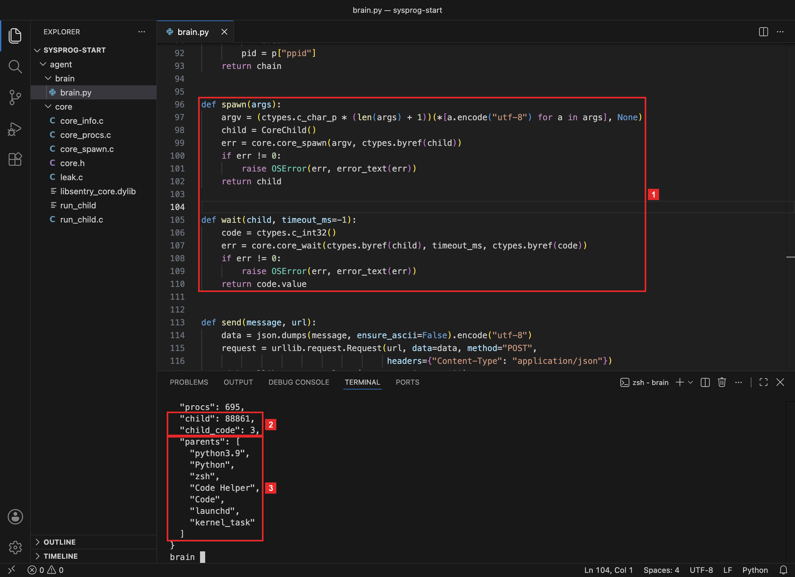
spawn и wait. 2 Ребёнок — процесс 88861, его код 3. 3 Цепочка родителей ребёнка: python3.9 ребёнка, Python мозга, zsh, VS Code, launchd, kernel_task.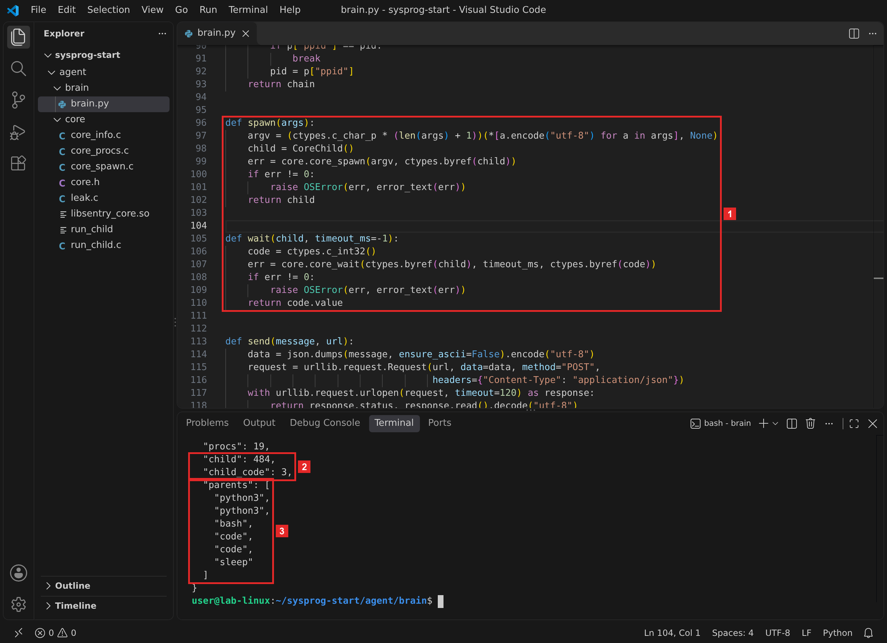
spawn и wait. 2 Ребёнок — процесс 484, его код 3. 3 Цепочка родителей ребёнка: два python3, bash, два процесса VS Code и sleep — процесс 1 контейнера.Первые два имени цепочки — ребёнок и сам мозг: ребёнка запустило ядро агента, загруженное в процесс мозга, поэтому родитель ребёнка — процесс Python с brain.py. Дальше идёт та же цепочка, что в главе 2.1: терминал, VS Code и процессы системы.
Имена ребёнка и мозга разные: команда python3 в этом терминале — короткий запускатель, который запускает интерпретатор Python. sys.executable указывает на сам интерпретатор python3.9, его и запускает ядро агента.
Что получилось.Мозг запускает программу через ядро, находит её в списке процессов своим ребёнком и получает её код. Осталось отправить работу в репозиторий.
§7Шаг 6. Отправить в репозиторий
В репозиторий уходят исходники: core.h, core_spawn.c, run_child.c и brain.py. В agent/core/README.md дописываем строку о core_spawn.c и сборке библиотеки из трёх файлов.
git add agent/core/core.h agent/core/core_spawn.c agent/core/run_child.c agent/core/README.md agent/brain/brain.py git commit -m "core: core_spawn и core_wait — запуск процесса, brain: spawn и wait" git push
Перед git add посмотрите git status: если в списке есть собранная run_child.exe или run_child.librun_child, допишите её в .gitignore. После отправки «Проверки» собирают библиотеку из всех файлов agent/core/*.c без main, теперь вместе с core_spawn.c, и проверка 1 из главы 2.1 проходит на новой библиотеке.
Что получилось.Ядро и мозг с запуском процессов в репозитории. Последняя часть — что проверять, если код запуска пишет помощник ИИ.
§8Запрос к помощнику ИИ
Код запуска процесса помощник ИИ пишет быстро и обычно рабочий: программа запускается, код приходит. Ошибка проявляется через много запусков: система копит записи о процессах, которые никто не освободил. Запрос в режиме Р2 из главы 0.3, когда код целиком пишет помощник:
Вот core.h. Напиши core_spawn и core_wait для WindowsmacOSLinux: запустить программу по argv, вернуть номер процесса, дождаться завершения с пределом времени и вернуть код завершения.
Проверить такой код помогает программа leak.c: она 20 раз запускает короткую программу через core_spawn и ни разу не вызывает core_wait. До и после запусков она печатает, сколько у неё открытых дескрипторов — функция GetProcessHandleCountдетей-зомби. Зомби — завершившийся процесс, код которого родитель ещё не забрал: от процесса осталась только запись в системе с номером и кодом. Программа считает их по выводу ps: у зомби в столбце состояния буква Z.
#include <stdio.h> #include "core.h" #ifdef _WIN32 #include <windows.h> #else #include <unistd.h> #endif #define N 20 static void report(const char *when) { #ifdef _WIN32 DWORD handles = 0; GetProcessHandleCount(GetCurrentProcess(), &handles); printf("%s: handles %lu\n", when, (unsigned long)handles); #else int ppid, zombies = 0; char stat[8]; FILE *ps = popen("ps -A -o ppid=,stat=", "r"); while (ps != NULL && fscanf(ps, "%d %7s", &ppid, stat) == 2) if (ppid == (int)getpid() && stat[0] == 'Z') zombies++; if (ps != NULL) pclose(ps); printf("%s: zombies %d\n", when, zombies); #endif } int main(void) { #ifdef _WIN32 char *args[] = {"cmd", "/c", "exit", NULL}; #else char *args[] = {"true", NULL}; #endif struct core_child child; report("before"); for (int i = 0; i < N; i++) core_spawn(args, &child); #ifdef _WIN32 Sleep(1000); #else sleep(1); #endif report("after 20 core_spawn without core_wait"); return 0; }
cl /nologo /W4 leak.c core_spawn.c leak.exe
clang -Wall -Wextra -o leak leak.c core_spawn.c ./leak
gcc -Wall -Wextra -o leak leak.c core_spawn.c ./leak
Для сравнения собрана вторая программа, leak_ai.exe, с ядром, где пропущена строка CloseHandle(pi.hThread) — частая ошибка в коде от помощника. Файл ai_spawn.c получен из core_spawn.c командой findstr /v /c:"CloseHandle(pi.hThread)" core_spawn.c > ai_spawn.c: findstr /v оставляет все строки, кроме найденной.
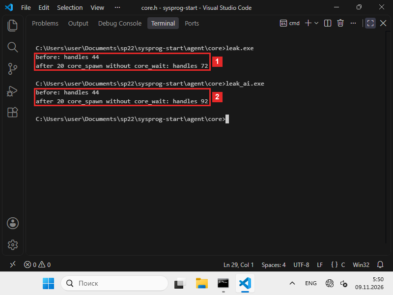
CloseHandle(pi.hThread): было 44, стало 92.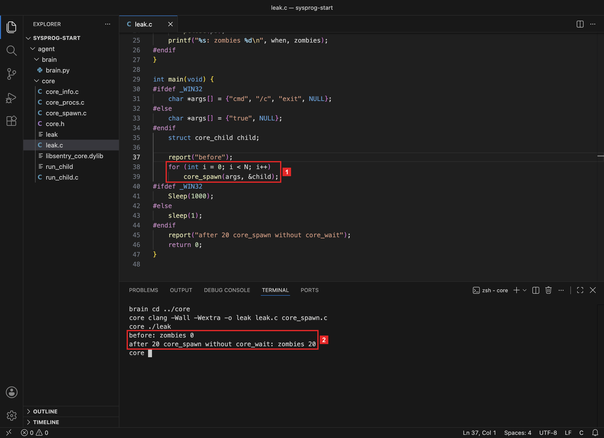
core_wait. 2 Зомби: было 0, стало 20.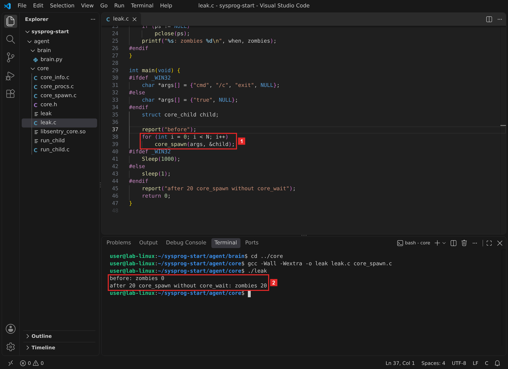
core_wait. 2 Зомби: было 0, стало 20.Числа с кадров всех трёх систем сведены в таблицу:
Что остаётся после 20 запусков без core_wait
| Система | До | После | Что накопилось |
|---|---|---|---|
| Windows, ядро главы | 44 дескриптора | 72 | 20 дескрипторов процессов и 8 других |
Windows, без CloseHandle(pi.hThread) | 44 дескриптора | 92 | ещё 20 дескрипторов потоков |
| macOS | 0 зомби | 20 | 20 записей о завершившихся детях |
| Linux | 0 зомби | 20 | 20 записей о завершившихся детях |
Числа — из запусков leak.c на кадре: Windows 11 в ВМ, macOS 26, Linux в контейнере.
Каждый запуск без ожидания оставляет в системе след. В Windows это открытый дескриптор процесса: 20 запусков — 20 дескрипторов процессов. Ещё 8 дескрипторов программа открыла по ходу работы для своих нужд. Если ядро вдобавок не закрывает дескриптор потока, на каждый запуск остаётся два дескриптора, и рост вдвое больше: 48 против 28.В macOS и Linux это зомби: ребёнок завершился, а запись о нём остаётся до вызова waitpid. 20 запусков — 20 зомби. Записи исчезают, только когда завершается сам родитель. Агент работает неделями, поэтому у него они копятся без конца.
- после
CreateProcessWдескриптор потока закрывается, а дескриптор процесса — после того, как код прочитан;послеposix_spawnpна каждом пути кода естьwaitpid, иначе ребёнок станет зомби; - ожидание идёт с пределом времени, и «время вышло» возвращается отдельным кодом, отличным от нуля;
- код ребёнка разбирается:
GetExitCodeProcessпослеWaitForSingleObjectчерезWIFEXITEDиWEXITSTATUS: в числеstatusкод упакован вместе с другими сведениями; leak.cпосле 20 запусков сcore_waitпоказывает то же число, что до них.
Первые три пункта проверяются чтением кода, последний — запуском.
§9Справка: функции и команды
| Что нужно | Windows | macOS | Linux |
|---|---|---|---|
| Запустить программу | CreateProcessW | posix_spawnp (под ним копия процесса и execve) | |
| Чем держат процесс | дескриптор процесса | номер процесса | |
| Дождаться | WaitForSingleObject | waitpid, с WNOHANG — без ожидания | |
| Код завершения | GetExitCodeProcess | WIFEXITED, WEXITSTATUS; сигнал — 128 + WTERMSIG | |
| Освободить запись | CloseHandle дескриптора процесса | waitpid | |
| «Время вышло» | 258 WAIT_TIMEOUT | 60 ETIMEDOUT | 110 ETIMEDOUT |
| «Программы нет» | 2 ERROR_FILE_NOT_FOUND | 2 ENOENT | |
| Собрать библиотеку | cl /LD core_info.c core_procs.c core_spawn.c | clang -shared -fPIC … | gcc -shared -fPIC … |
§10Частые вопросы
waitpid в macOS и Linux. В шаге leak.c таких записей набралось 20.run_child завершилась, а процесс с pingsleep работал дальше.§11Проверьте себя
Какого размера struct core_child и что в её полях на каждой системе?
16 байт: номер процесса и дескриптор, по 8 байт. В Windows handle — дескриптор процесса от CreateProcessW, в macOS и Linux — 0.
Почему в Windows дескриптор потока закрывают сразу после запуска, а дескриптор процесса — нет?
Поток ядру агента не нужен. Дескриптор процесса нужен core_wait: по нему ждут процесс и читают код завершения. Его закрывают после того, как код прочитан.
Что делает флаг WNOHANG в waitpid?
Вызов отвечает сразу: номер ребёнка, если он завершился, или 0, если ещё работает. Поэтому core_wait может ждать с пределом времени, спрашивая каждые 10 мс.
Что вернёт core_wait, если ребёнка убили сигналом 9?
0, а в exit_code — 137: процесс завершён сигналом, и ядро агента записывает 128 + 9, как оболочки. Проверка — run_child 2000 sh -c 'kill -9 $$' в macOS или Linux.
Что такое зомби и как его убрать?
Завершившийся процесс, код которого родитель не забрал. Убирает его родитель вызовом waitpid. Если родитель завершился, зомби достаётся новому родителю, и тот его забирает.
Почему первые два имени в цепочке родителей ребёнка — Python?
Ребёнок — второй Python, а запустило его ядро агента, загруженное в процесс мозга. Ядро работает внутри Python, поэтому родитель ребёнка — процесс Python с brain.py.
§12Шпаргалка по главе
struct core_child: pid, handle16 байтcore_spawn(argv, &child)CreateProcessW, поток закрыть сразуposix_spawnpcore_wait(&child, ms, &code)WaitForSingleObject + GetExitCodeProcesswaitpid с WNOHANGspawn([…]) — процессwait(child, 5000) — кодИтог главы
Ядро агента получило две функции. core_spawn запускает программу по списку аргументов: в Windows — CreateProcessW по командной строке, склеенной из списка, в macOS и Linux — posix_spawnp. core_wait ждёт ребёнка с пределом времени и возвращает его код: в Windows через дескриптор процесса, в macOS и Linux через waitpid. Программа run_child.c показала три исхода: код 7, «время вышло» с кодом 25860110 и «программы нет» с кодом 2. Мозг запустил второй Python, увидел его своим ребёнком в списке процессов и получил код 3. Программа leak.c показала, что запуск без ожидания оставляет в системе след: 20 дескрипторов процессов, а без CloseHandle(pi.hThread) — ещё 20 дескрипторов потоков20 зомби.
- Кадры и выводы: macOS 26.1, Apple clang 17, Python 3.9 из Command Line Tools; Linux — контейнер Debian 13, gcc 14.4, Python 3.13; Windows 11 ARM64 в VirtualBox, MSVC 19.44 (ядро и программы собраны для ARM64), Python 3.14 для ARM64; VS Code 1.144. Код также проверен на windows-latest в GitHub Actions (x64).
CreateProcessW, порядок поиска программы,PROCESS_INFORMATION— Microsoft Learn, CreateProcessW;WaitForSingleObject,GetExitCodeProcess,GetProcessHandleCount— Microsoft Learn; коды 2, 87, 258 — System Error Codes.posix_spawnp— man 3 posix_spawn;waitpid,WNOHANG,WIFEXITED, зомби — man 2 wait.ETIMEDOUT60 и 110 —sys/errno.hSDK macOS и man 3 errno.